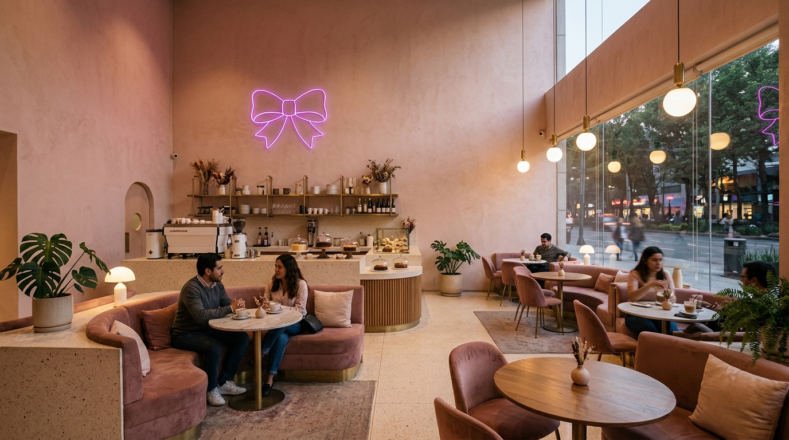
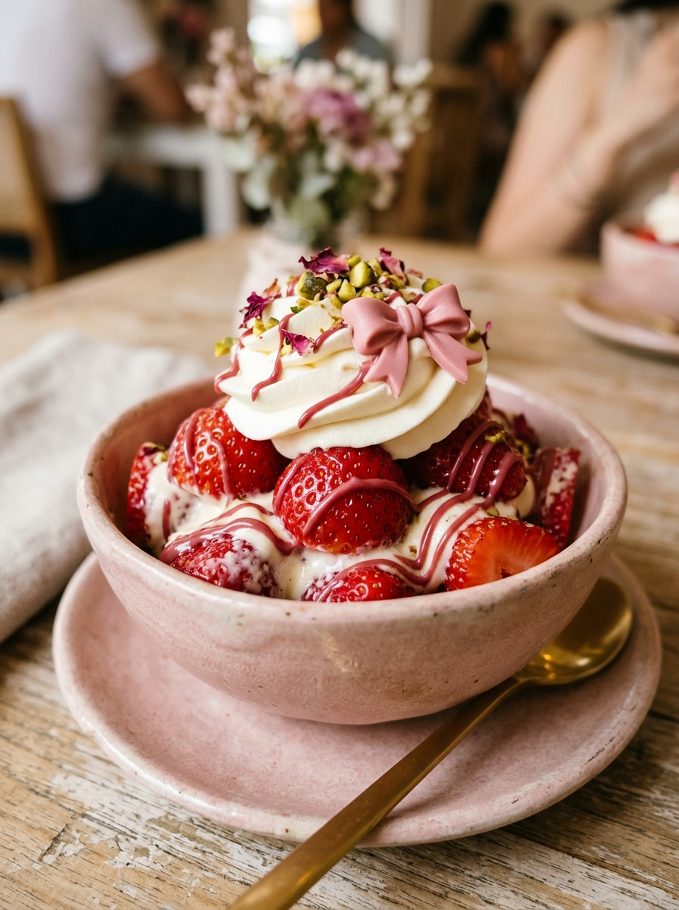
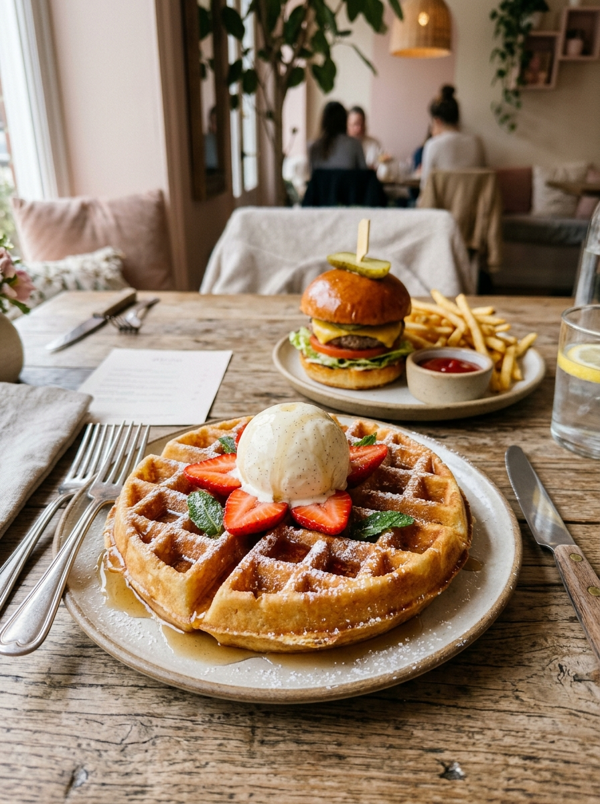
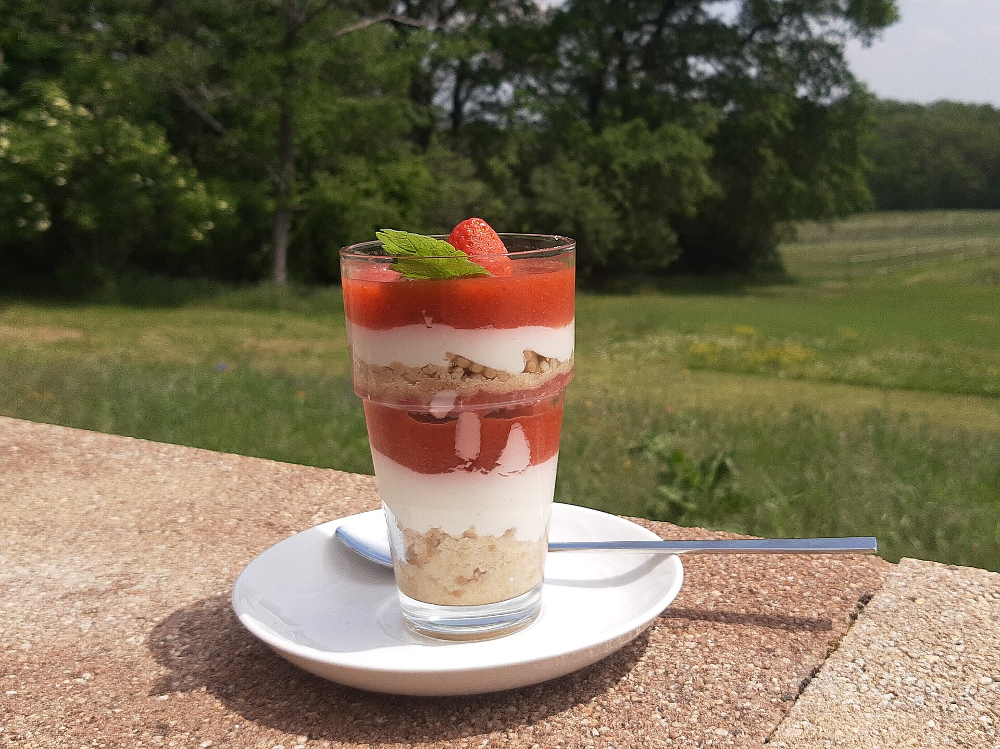
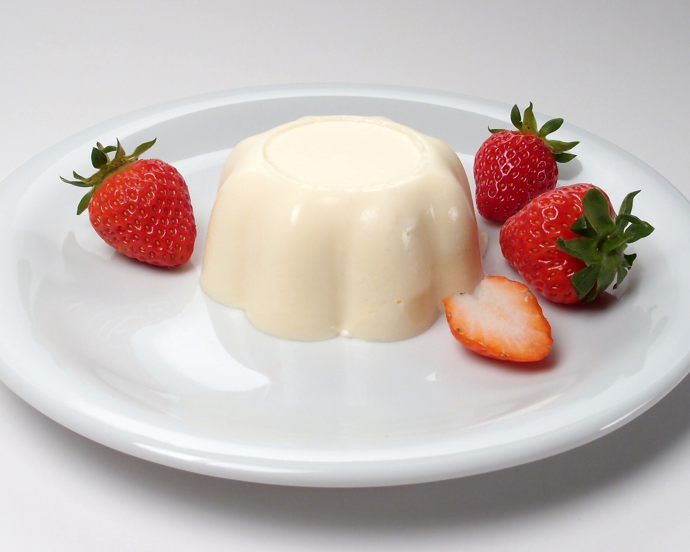
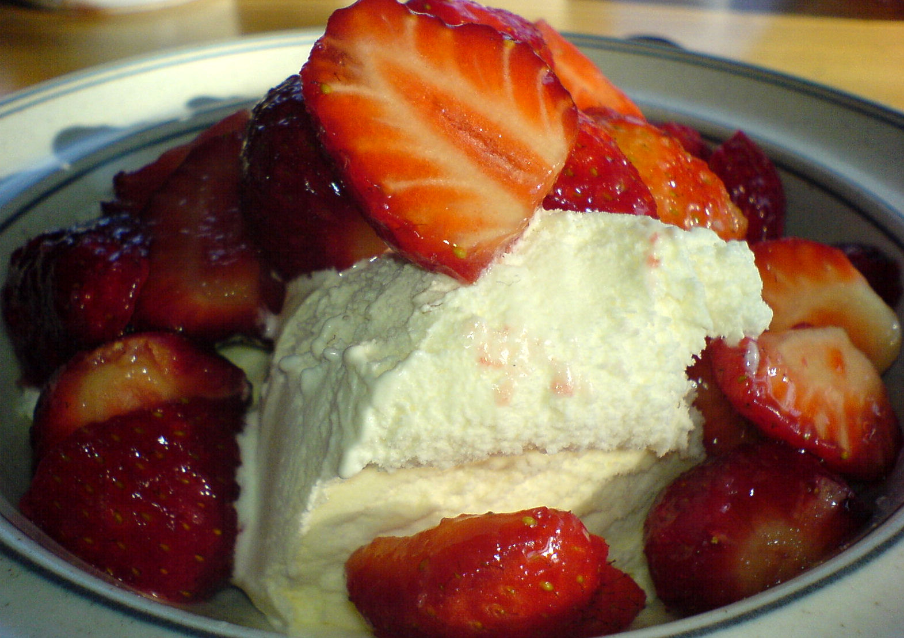

Fresas rubí y café kawaii
Barra de fresas gourmet con crema batida, lattes rosados, waffles belgas y cenas temáticas en Calpulalpan 252, San Felipe de Jesús.
Dulcería de tarde y noche

En Love Kitty Café cada postre sale decorado al momento: fresas seleccionadas con crema de la casa, espuma con silueta felina y pan artesanal recién horneado.
Nacimos en el corazón de Gustavo A. Madero como un punto de encuentro para amantes de la estética kawaii, tardes de cosplay, festejos de cumpleaños y citas dulces. Puedes visitarnos en mesa, apartar tu lugar para festejar o pedir directo por WhatsApp y plataformas.
- Fresas del día
- Cortadas cada tarde con crema batida artesanal, chocolate blanco rosado y toppings crujientes.
- Festejos y cosplay
- Mesas decoradas para cumpleaños, pasteles sobre pedido y bebidas temáticas sin alcohol.
Carta completa de la casa
Recién salido de barra

Waffles y cenas temáticas
Masa crujiente por fuera y suave por dentro, servida con fruta fresca recién cortada o acompañada de nuestra Kitty Burger con papas.
Agregar al pedido
Capas de fresa y crema
Equilibrio entre acidez natural de fresa y crema batida ligeramente avainillada.

Repostería de temporada
Postres suaves de vainilla y frutos rojos para cerrar la tarde en San Felipe de Jesús.
Arma pedido o reserva
Selecciona tus antojos para calcular el estimado y armar tu mensaje de WhatsApp:
Total estimado
Lo que celebramos en casa

Cumpleaños kawaii · Tardes de cosplay · Citas con fresas gourmet · Viernes de esquimos · Sábados de waffles · Pasteles personalizados
Atención directa en el teléfono +52 55 2865 9717 y entregas a domicilio en Gustavo A. Madero y zonas cercanas.
Visítanos en San Felipe
Love Kitty Café
Calle Calpulalpan 252, esquina con Tulipán, Colonia San Felipe de Jesús, Alcaldía Gustavo A. Madero, C.P. 07510, Ciudad de México.
| Miércoles a viernes | 17:00 – 22:00 |
| Sábado y domingo | 14:00 – 22:00 |
| Lunes y martes | Cerrado |
Teléfono y WhatsApp directo: +52 55 2865 9717